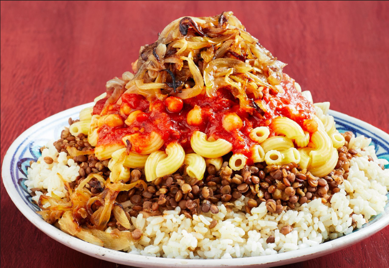
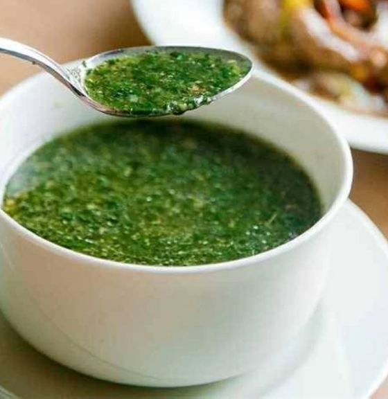
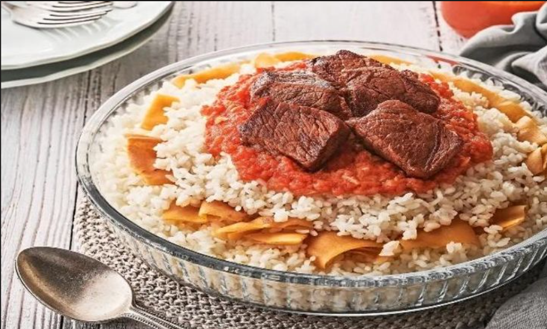
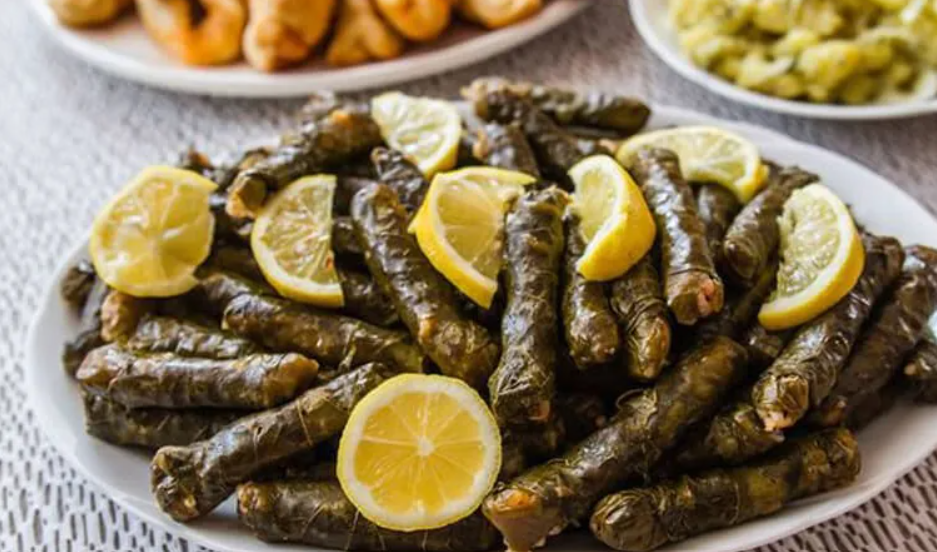

Koshari
Koshari is one of the most popular Egyptian dishes. It is made with rice, pasta, lentils, and tomato sauce.

Bechamel Pasta
Bechamel pasta is a popular Egyptian dish made with pasta, minced meat, and creamy bechamel sauce.

Ful Medames
Ful Medames is a traditional Egyptian dish made from cooked beans.

Molokhia
Molokhia is a famous Egyptian dish usually served with rice and chicken or meat.

Fattah
Fattah is a traditional Egyptian dish made with bread, rice, and meat.

Mahshi
Vegetables stuffed with rice, herbs, and spices
